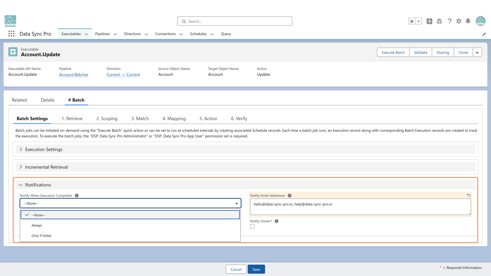

Configure notifications using these fields on the Executable or Pipeline:
Set Notify When Execution Completes to Always or Only If Failed to specify when notifications are sent.
Choose recipients by enabling Notify Owner (to notify the Executable or Pipeline owner), entering comma-separated addresses in Notify Email Addresses, or using both options together.
